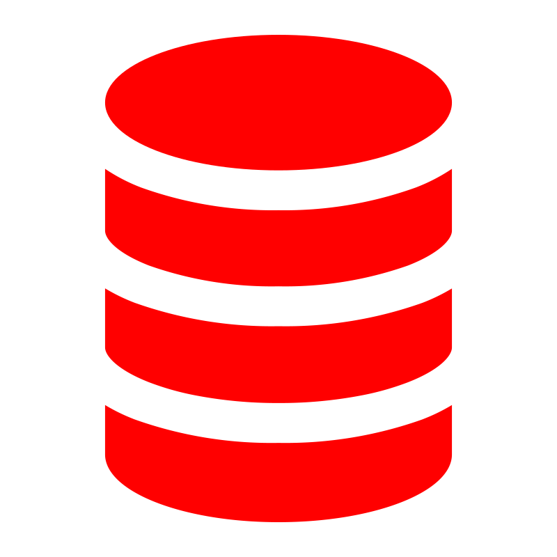

Mis habilidades
Tecnologías y herramientas que domino. Pulsa sobre una habilidad para expandir los detalles
Backend
90%
- Desarrollo backend con Java 17+.
- Acceso a bases de datos mediante JDBC.
- Gestión de entidades y operaciones CRUD con JPA y Spring Data.
- Configuración de proyectos Maven.
- Diseño de interfaces gráficas.
 Spring Boot
Spring Boot
60%
- Organización por capas: controlador, servicio y repositorio.
- Modelado de entidades JPA con relaciones bidireccionales.
- Repositorios con JpaRepository y consultas automáticas.
- Uso de @Query para consultas personalizadas.
 Python
Python
70%
- Capacidad de adaptación rápida a nuevas librerías y entornos.
- Desarrollo de scripts para automatizar tareas repetitivas y procesos manuales.
- Web scraping básico con BeautifulSoup.
- Lectura, transformación y análisis de datos con pandas y numpy.
- Automatización de reportes y extracción de datos desde archivos Excel/CSV.
 Android
Android
70%
- Manejo de múltiples tipos de ítems y layouts en RecyclerView.
- Gestión de comunicación entre Fragments y Activities mediante interfaces y ViewModels compartidos.
- Desarrollo de interfaces responsivas con ConstraintLayout
- Generación y uso de logs personalizados para depuración y monitoreo
Frontend
 HTML
HTML
100%
- Desarrollo de estructuras claras y organizadas para facilitar el mantenimiento del código.
- Integración de recursos multimedia como vídeos, audios e iframes en proyectos web.
- Creación de tablas accesibles y listas ordenadas/desordenadas para contenidos jerárquicos.
- Integración de íconos, tipografías y librerías externas.
 CSS
CSS
80%
- Maquetación de interfaces modernas y responsivas.
- Personalización de formularios, botones e inputs con transiciones suaves y estilos propios.
- Implementación de animaciones con @keyframes, transiciones y efectos visuales.
- Uso de variables CSS para facilitar el mantenimiento y reutilización de estilos.
- Creación de diseños visualmente atractivos sin depender de frameworks externos.
 JavaScript
JavaScript
60%
- Uso de eventos (click, input, submit, etc.) y control del flujo de interacción en la interfaz.
- Implementación de funciones reutilizables, callbacks y manejo de eventos personalizados.
- Uso de funciones de array (map(), filter(), reduce()) para tratamiento de colecciones.
- Desarrollo de lógica interactiva para sliders, menús, pestañas, filtros...
Bases de datos
 Oracle SQL
Oracle SQL
90%
- Creación y optimización de consultas SQL complejas con múltiples JOIN, subconsultas y funciones agregadas.
- Manejo de estructuras de datos: tablas, vistas, índices, secuencias y sinónimos.
- Diseño de esquemas de base de datos y modelado relacional en entornos Oracle.
- Configuración de constraints (CHECK, UNIQUE, FOREIGN KEY, NOT NULL).
- Gestión de transacciones con COMMIT y ROLLBACK.
- Gestión de privilegios, roles y control de acceso a nivel de usuario.
- Dominio de sentencias DDL (CREATE, ALTER, DROP) y DML (INSERT, UPDATE, DELETE, MERGE).
 PL/SQL
80%- Desarrollo de lógica compleja en base de datos mediante PL/SQL, incluyendo procedimientos, funciones, triggers y paquetes.
- Optimización de procesos con cursores y bloques PL/SQL para manipulación masiva de datos.
- Declaración y uso de tipos de datos personalizados (RECORD, TABLE, %ROWTYPE...).
- Manejo avanzado de errores con bloques EXCEPTION personalizados.
- Control de flujo y lógica condicional mediante estructuras IF, CASE, LOOP, FOR, WHILE.
 PostgreSQL
PostgreSQL
75%
- Diseño y administración de bases de datos relacionales.
- Escritura de consultas SQL complejas utilizando JOIN, GROUP BY, subconsultas y funciones agregadas.
- Creación de funciones y procedimientos almacenados usando PL/pgSQL.
- Uso de herramientas gráficas como pgAdmin.
- Integración con aplicaciones externas a través de conectores JDBC.
- Configuración de constraints (CHECK, UNIQUE, FOREIGN KEY, NOT NULL) para garantizar consistencia.
- Manejo de triggers y reglas para automatizar procesos y mantener la integridad de los datos.
 MongoDB
MongoDB
60%
- Modelado de datos NoSQL y desarrollo de bases de datos documentales.
- Creación, consulta y manipulación de colecciones mediante operaciones CRUD.
- Consultas avanzadas con filtros, operadores lógicos ($and, $or, $in), y expresiones regulares.
- Uso de colecciones temporales, TTL y operadores de fecha ($date, $gt, $lt).
DevOps
 Linux
Linux
60%
- Navegación y gestión de archivos en la terminal.
- Uso de comandos de búsqueda y filtrado.
- Visualización de contenido de archivos.
- Creación y edición de archivos de texto usando editores de terminal.
- Instalación de paquetes y software mediante gestores de paquetes.
- Configuración de cron jobs básicos para tareas programadas con crontab.
- Uso de permisos básicos de superusuario (sudo) y ejecución de tareas administrativas simples.
 Git
Git
90%
- Uso de Git para control de versiones en proyectos individuales y colaborativos.
- Manejo de ramas (branch).
- Resolución de conflictos de fusión y sincronización con ramas remotas (pull, push, fetch).
- Creación de commits atómicos con mensajes descriptivos y buenas prácticas.
- Clonación y mantenimiento de repositorios externos para integración en entornos locales.
Ubuntu
50%- + Habilidades mecionadas en 'Linux'.
- Uso de Ubuntu en equipos físicos y entornos virtualizados como sistema de desarrollo o práctica.
 GitHub
GitHub
90%
- Gestión de proyectos y control de versiones en la nube.
- Documentación de proyectos con archivos README.md.
- Administración de ramas remotas y estrategias de integración.
Fedora
70%- + Habilidades mecionadas en 'Linux'.
- Uso fluido de Fedora para tareas técnicas básicas a través de terminal y entorno gráfico.
- Instalación y configuración de entornos gráficos, herramientas de desarrollo y paquetes adicionales en Fedora.
- Instalación y eliminación de programas mediante dnf y rpm en sistemas Fedora.